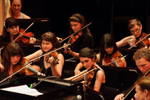

What is The Barrier Reef Ochestra
Fast becoming one of North Queensland’s cultural jewels the Barrier Reef Orchestra this year launches its 15th year of performing orchestral music throughout North Queensland. A community orchestra consisting of the finest musicians drawn from as far afield as Cairns and Mackay, it focuses on unique orchestral juxtapositions.
